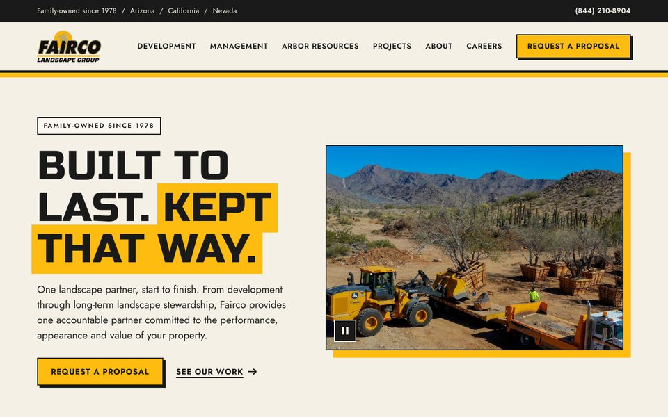
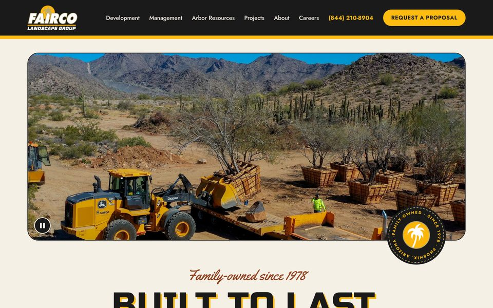
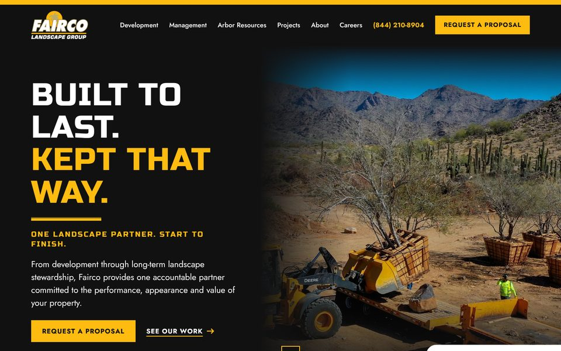
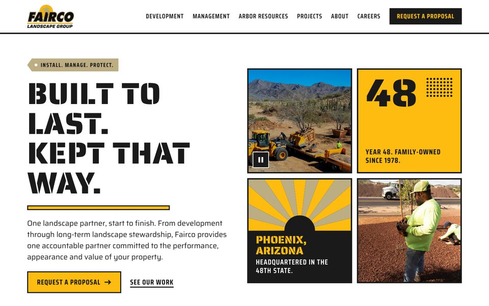

Website design directions
Four design directions for the new Fairco homepage, with directions B and C built out as full sites. Every page is responsive, so narrow the browser window or open it on a phone to see the mobile layout. Copy and photos are working drafts.

Field Standard
Clean, light and structured. The closest to the brand standards as written.
Open direction A
Heritage Patch
Workwear-patch details and script accents, with an adobe red added to the palette.
Open direction B
Brochure Black & Gold
The black-and-gold look of the printed trifolds, rebuilt as a homepage.
Open direction C
No. 48
Stencil type and square tiles built around the number 48. Uses typefaces outside the brand standards.
Open direction DInner pages
Directions B and C each have eleven inner pages, including four Landscape Management service pages. The navigation on each page is live, so you can click through from the homepage as a visitor would.
Heritage Patch
Photos in use
Every photo on these pages lives in the images folder. To swap one, replace the file and keep the same file name. Photos are cropped to fit their frame, so a replacement only needs to be the same orientation and at least the size listed.

hero-boxed-trees.jpgHero. A, B, C, D2000 × 1125, landscape
dev-excavators.jpgLandscape Development. A, B, C, D. Also Careers in D1400 × 1050, landscape
mgmt-pocket-park.jpgLandscape Management. A, B, C, D1400 × 1050, landscape
arbor-truck-wide.jpgArbor Resources. A, C, D1400 × 933, landscape
arbor-truck-tall.jpgArbor Resources. B1000 × 1250, portrait
crew-ironwood.jpgCareers. A, B, C. Hero tile in D1000 × 1250, portrait
imp-install.jpgInstall column. A only1000 × 750, landscape
imp-manage.jpgManage column. A only1000 × 750, landscape
imp-protect.jpgProtect column. A only1000 × 750, landscape
work-verrado.jpgSelected work. A, B, C, D1400 × 1050, landscape
work-morrison.jpgSelected work. A, B, C, D1148 × 861, landscape
work-estrella.jpgSelected work. A, B, C, D1400 × 1050, landscape
work-talkingstick.jpgSelected work. A, B, C, D1400 × 1050, landscape